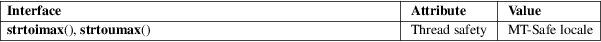

strtoimax, strtoumax − convert string to integer
Standard C library (libc, −lc)
#include <inttypes.h>
intmax_t
strtoimax(const char *restrict nptr, char
**restrict endptr,
int base);
uintmax_t strtoumax(const char *restrict nptr,
char **restrict endptr,
int base);
These functions are just like strtol(3) and strtoul(3), except that they return a value of type intmax_t and uintmax_t, respectively.
On success, the converted value is returned. If nothing was found to convert, zero is returned. On overflow or underflow INTMAX_MAX or INTMAX_MIN or UINTMAX_MAX is returned, and errno is set to ERANGE.
For an explanation of the terms used in this section, see attributes(7).

C11, POSIX.1-2008.
POSIX.1-2001, C99.
imaxabs(3), imaxdiv(3), strtol(3), strtoul(3), wcstoimax(3)